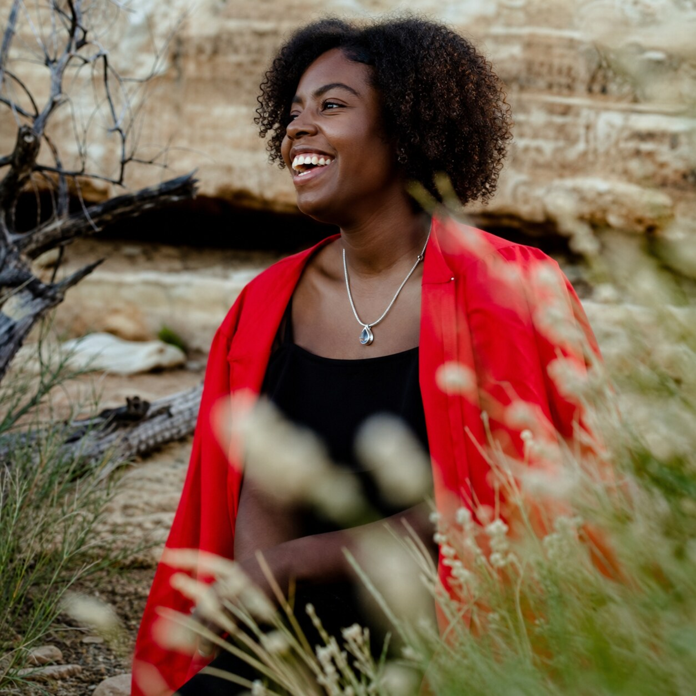
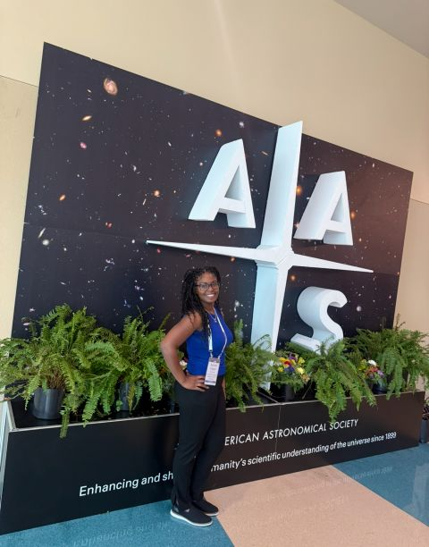
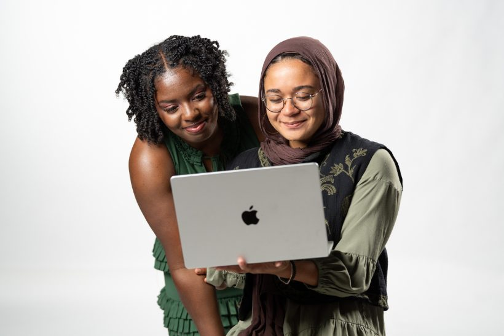
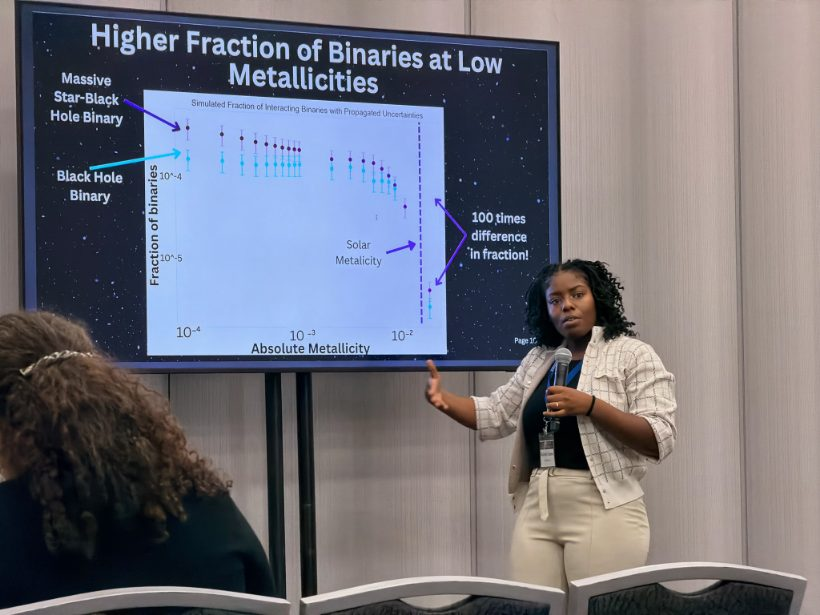
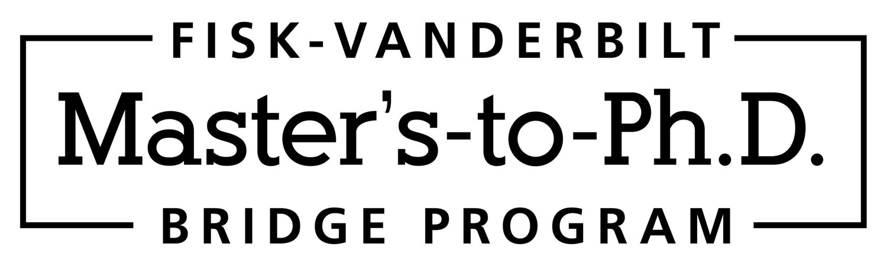
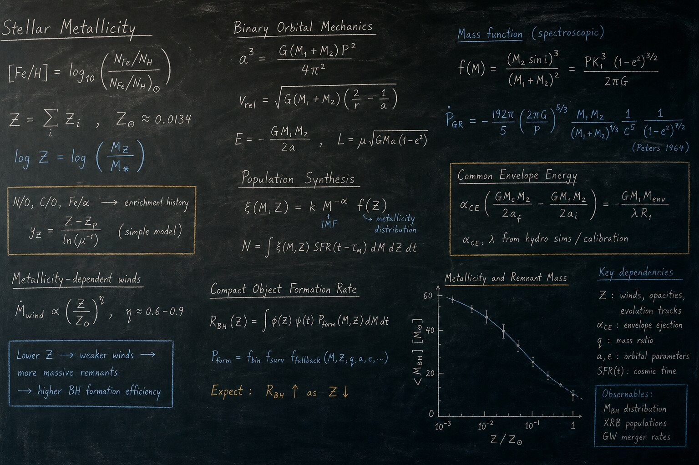

PLANET 01
Curiosity is my compass.
I’m a scientist, mentor, and lifelong learner. My path through physics has always been about asking better questions and making space for more people to ask theirs.

Computational Scientist · Masters-to-PhD Student
01 · About me
Hover over a planet to learn what keeps me in orbit.
PLANET 01
I’m a scientist, mentor, and lifelong learner. My path through physics has always been about asking better questions and making space for more people to ask theirs.

PLANET 02
My work uses metallicity abundance and computational analysis to understand how astrophysical systems form, change, and carry the history of their environments.

PLANET 03
Community, creativity, travel, and the people I love keep my perspective wide. Science is part of my world, not the whole of it.
02 · My journey
Each chapter brought a new question into focus.

THE COMMUNITY · NOW
WIP
MENTORSHIP
THE WORK · NOW
WIP
RESEARCHLOS ALAMOS NATIONAL LABORATORY
WIP
NATIONAL LAB

THE BEGINNING
WIP
EARLY STUDIESUNDERGRADUATE
WIP
UNDERGRADUATE03 · Selected work
PUBLICATIONS
Showing publication records from Semantic Scholar.
04 · Make contact
I’m open to research collaborations, data science opportunities, and conversations with curious people.